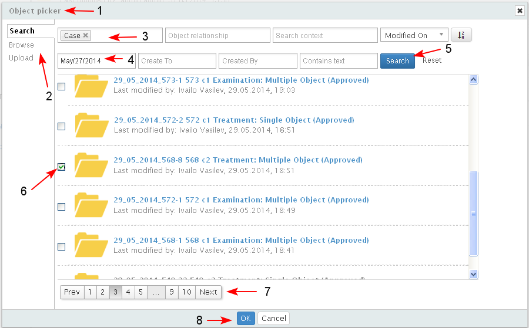

Preconditions
Relations between two cases may be created if the cases are in state active - active or active - final state. The action is not permitted to be started from a case which is in a final state.
- The action is started from:
- Case Dashboard/ Relationships (1-2)
- Case details/ Relationships

- The system opens the screen with the list with related content of that case. The list has two sections - Relation type (1) and Related object (2).
Each object in the list is represented with its icon, ID, Title and Type, which are a link to the respective object landing page.
The link to the object is not accessible if the user who reviews the current object does not have permissions to the referenced one.
The user clicks "Add relation" (3).

- A new section for selecting the "Relation type" (1) of the new relationship appears. The user selects the type from a drop down list (2-3).
The object type is not a restriction. The user could create any types of relationships between two objects except parent-child relationship.
- A new button "Object picker" (4) appears on the screen and the user clicks it.

The system opens the "Object picker" (1). The user is allowed to search for object/s (here -case) from the whole system (2) or from the current project.
- The user searches for cases (3) using different search criteria (4), and after that selects the target case to which the current case to be related (5-6). The search results are paginated (7). Unlimited number of relations between one case and other cases may be created.
- The user clicks "OK" (8).

- The new relationship is created and it is both visible in the Related Content section of the current object, and in the Related Content section of the related object.
For the related case the following information is visible in section "Relationships" :Relation type, ID, Name, State. If a case is selected from the list of related cases, the corresponding Case dashboard of the selected case would open.
- The relationship is visible in the current case(1).
The created relationship may be deleted by selecting the corresponding button "X" (2), available for all user created relations. When deleted, the relation is deleted in both related objects (here - cases).

- The relationship is visible in the related case (the case to which the relation was made)(1-2).